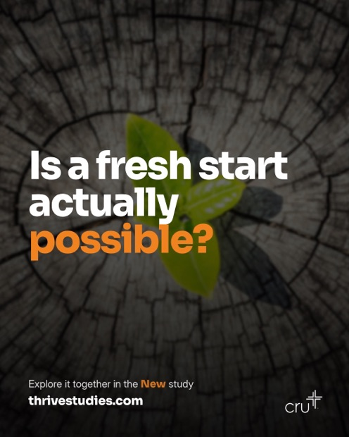
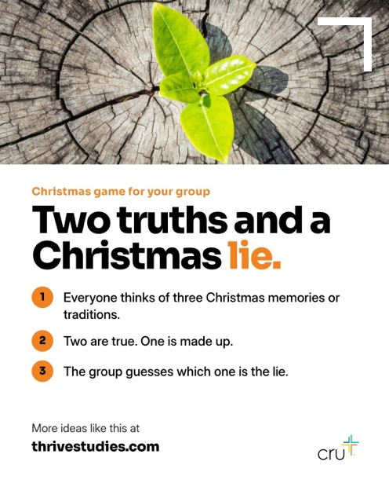
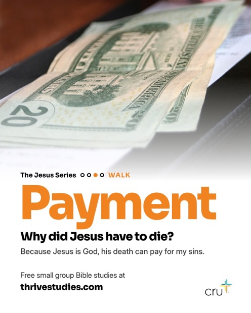
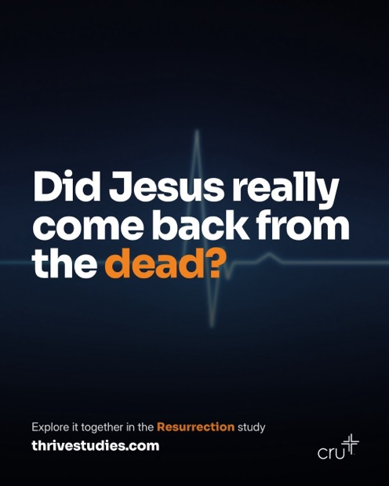

This is a sample.The real page is private. Everything here is on screen only, nothing saves.Back to the projects hub
Thrive Post Review
Thrive Studies posts to Instagram twice a week. Claude writes the whole month, makes the images, and puts them here. Mark looks them over in one sitting. This page shows how that works.
48 seconds, no talking. The written version is below.
1
Claude drafts the month
On the 10th it picks the next series, writes eight posts, makes the images and sends an email saying they are ready.
2
Mark reviews them here
Every post shows its picture and its caption, in the order they will go out.
3
Approve, or ask for a fix
Approve the good ones. For the rest, say what to change in plain words. Claude reads the note and redoes it.
4
Approved posts go out
Mondays and Thursdays at 6pm Eastern, posted automatically. Nothing unapproved is ever published.
A
Steering what comes next. Each month has a box. Type an idea or ask for a different series, and Claude uses it when it drafts that month. This is the only planning Mark has to do.
The next six months
One study series a month. Sample months shown.
JanuaryWalkDrafted
Growing With GodFour studies, eight posts. New year, fresh start.
FebruaryWalkPlanned
RelationshipsValentine's Day falls mid month.
MarchRunPlanned
Power UpEaster lands at the end of the month.
B
The month's posts. Picture on the left, the exact caption that will be posted on the right. The tab counts how many are still waiting.
Posts to review
C
Try it. The buttons below work on this sample page. Nothing is saved and no real post changes.

Thu, Dec 10Real questionWALK: The Jesus Series · NewApproved
Is a fresh start actually possible?
Maybe it's something you said. Maybe it's a reputation that won't go away. A lot of students wonder if they can ever really start over. The New study looks at the day Jesus told a man, "Your sins are forgiven," and then proved he had the power to say it.
What would a fresh start mean to you? Tell us below.
Free studies at the link in bio.
#ThriveStudies

Mon, Dec 14Leader tipWALK: The Jesus Series · NewChanges requested
Need a fun opener before Christmas break? Try this.
Everyone shares three Christmas memories or family traditions. Two are true, one is made up. The group guesses the fake. You'll learn more about your group in ten minutes than you have all semester.
Save this for your last group before break.
Free studies at the link in bio.
#ThriveStudies
Your note: Love the game, but can the opener work for a group that has not done the study yet?
Thu, Dec 17From the studyWALK: The Jesus Series · TeacherWaiting on you
Everyone wants you to listen to them. Who actually deserves your trust?
The Teacher study looks at the end of Jesus' most famous sermon, where he says the wise person builds on his words like a house on rock. Then it asks: is he worth that kind of trust?
Who do you trust most for advice? Tell us below.
Free studies at the link in bio.
#ThriveStudies

Mon, Dec 28Study spotlightWALK: The Jesus Series · PaymentApproved
Why did Jesus have to die? It's one of the biggest questions in the Christian faith, and a lot of students have never heard a clear answer.
Payment is study 3 in the Jesus series. It walks your group through it, one question at a time.
Get it free. Link in bio.
#ThriveStudies

Thu, Dec 31Real questionWALK: The Jesus Series · ResurrectionWaiting on you
Did Jesus really come back from the dead? It's okay to ask.
A lot of people hear it and think, "That sounds crazy." The Resurrection study looks at what really happened, who saw it, and why it matters for your grades, your friends, and your fears today.
A new year is a good time to wrestle with the big questions together.
What would you say to a friend who thinks it sounds crazy? Tell us below.
Free studies at the link in bio.
#ThriveStudies